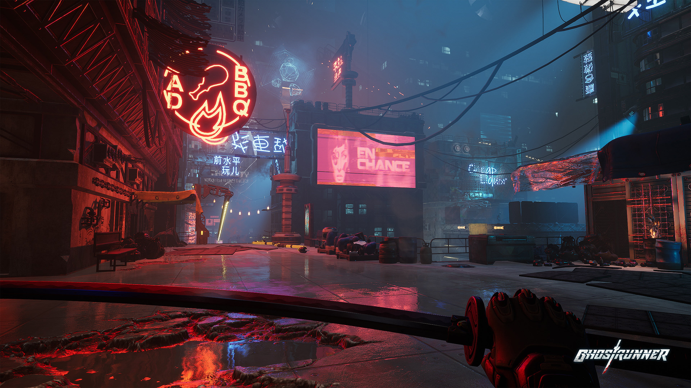

About Ghostrunner
Gameplay Mechanics in Detail: Movement Mastery: The core of Ghostrunner lies in its fluid and responsive movement system. Wall Running: Seamlessly transition between walls, maintaining momentum and gaining verticality. The duration of wall runs can be influenced by momentum and upgrades. Dashing: A quick burst of speed used for closing distances, dodging projectiles, and chaining movements. It often has a short cooldown or limited charges that replenish over time or through specific actions. Jumping: Precise and responsive jumps are crucial for platforming and navigating environmental hazards Double jumps or mid-air dashes can extend reach and provide more aerial maneuverability. Grappling Hook (Gapjammer): Allows for rapid traversal across large gaps and can be used offensively to pull enemies closer or swing around them. Its range and speed are often critical in combat scenarios. Sliding: Used for quickly moving under obstacles and can be combined with jumps and dashes to maintain momentum. Sliding into enemies can sometimes offer a tactical //advantage. Combat Flow and Strategy: While one-hit kills emphasize speed, strategic thinking is paramount. Enemy Variety: Different enemy types possess unique attack patterns, requiring players to adapt their approach. Some might be stationary turrets, others might charge aggressively, and some might have ranged attacks. Bullet Time (Sensory Boost): This isn't just for dodging; it's a tactical tool for analyzing enemy positions, planning attack routes, and lining up precise katana strikes or ability usage. Mastering its timing and efficient use is key to survival. Environmental Kills: Players can often use the environment to their advantage, such as pushing enemies off ledges or into hazards with well-timed dashes or abilities Ability Synergies: The unlockable abilities can be combined with movement and katana combat for devastating effects. For example, using Blink to quickly close the distance and then Tempest to eliminate multiple enemies. Upgrade System Nuances: The tetromino-style grid for upgrades encourages strategic fitting of acquired modules. Different modules offer various benefits, such as reduced ability cooldowns, increased dash charges, enhanced Sensory Boost duration, or defensive buffs. This allows for a degree of player customization to suit different playstyles. Cybervoid Challenges: These sections often i as shifting platforms, energy barriers, and enemies with different behaviors, forcing players to think outside the box and master new skills. Story and Lore Deep Dive: Dharma Tower's History: The game hints at a rich history of Dharma Tower, its initial utopian vision, the cataclysm of the Burst, and the subsequent descent into social stratification and tyranny under the Keymaster. Environmental storytelling and collectible data logs provide further insight into this lore. The Ghostrunners' Role: The Ghostrunners were once an elite force designed to maintain order and protect the tower's inhabitants. Their advanced cybernetic enhancements made them formidable warriors. The reasons for their downfall and the circumstances surrounding Jack's awakening are central to the narrative. The Architect's Motivations: Adam's goals and his relationship with the tower's past are complex and unfold gradually. His guidance of Jack is driven by a desire to reclaim Dharma Tower and potentially restore it to its former glory. Mara's Reign of Terror: The game portrays Mara as a brutal and efficient ruler who maintains control through force and manipulation. Her motivations for seizing power and her vision for the tower are explored as the story progresses. Zoe and the Resistance: Zoe represents the oppressed lower levels of Dharma Tower and provides a human connection to the suffering caused by Mara's regime. Her role highlights the social inequalities within the tower and the desire for liberation. Technical Aspects Elaborated: Visual Style: Ghostrunner boasts a distinctive dark and gritty cyberpunk aesthetic, characterized by neon lights, towering industrial structures, and a sense of oppressive technology. The visual design emphasizes both the beauty and decay of Dharma Tower. Sound Design and Music: The game features a dynamic electronic soundtrack that intensifies during combat and exploration, enhancing the sense of speed and urgency. Sound cues are also crucial for gameplay, indicating enemy presence, attacks, and environmental hazards. Performance Considerations: While the game offers advanced graphical features like ray tracing, achieving optimal performance often requires adjusting settings based on individual hardware. The fast-paced nature of the gameplay makes a stable and high frame rate desirable. Reception and Impact: Ghostrunner was generally well-received for its innovative gameplay, challenging difficulty, and stylish presentation. It was praised for successfully blending fast-paced parkour with intense, one-hit kill combat, creating a unique and exhilarating experience. The story and lore, while perhaps not the primary focus for all players, were appreciated for adding depth to the game world. The game's demanding nature was both a point of praise for those seeking a challenge and a potential barrier for more casual players. Ghostrunner offers a visceral and engaging experience that demands precision, reflexes, and strategic thinking. Its detailed world, combined with its unique gameplay mechanics, makes it a standout title in the cyberpunk action genre.
Read MoreGame Features

Ghostrunner is known for its challenging but rewarding gameplay loop, stylish cyberpunk aesthetic, and engaging narrative. Its focus on fast-paced movement and instant-death combat creates a unique and intense experience for players who enjoy demanding action games.
Minimum System Requirements (PC):OS: Windows 7, 8.1, 10 (64-bit)
Processor: Intel Core i5-2500K (3.3 GHz) or AMD Phenom II X4 965 (3.4 GHz)
Memory: 8 GB RAM
Graphics: NVIDIA GeForce GTX 1050 (2GB VRAM) or AMD Radeon RX 550 (4GB VRAM)
Storage: 22 GB available space
Recommended System Requirements (PC):
OS: Windows 7, 8.1, 10 (64-bit)
Processor: Intel Core i7-6700K (4.0 GHz) or AMD Ryzen 5 1500X (3.5 GHz)
Memory: 8 GB RAM
Graphics: NVIDIA GeForce GTX 970 (4GB VRAM) or AMD Radeon RX 5700 (8GB VRAM)
Storage: 22 GB available space